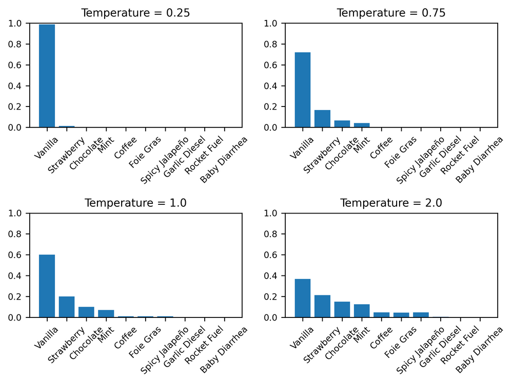
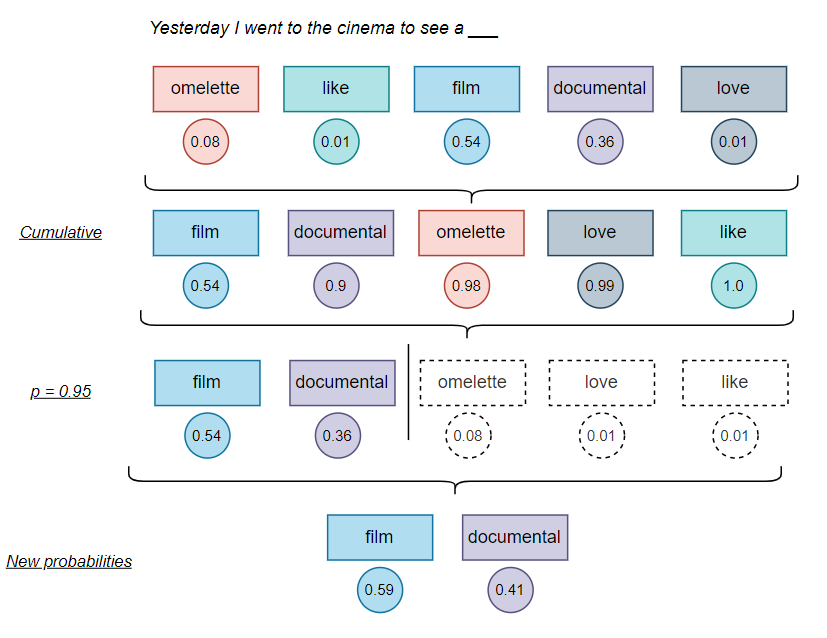
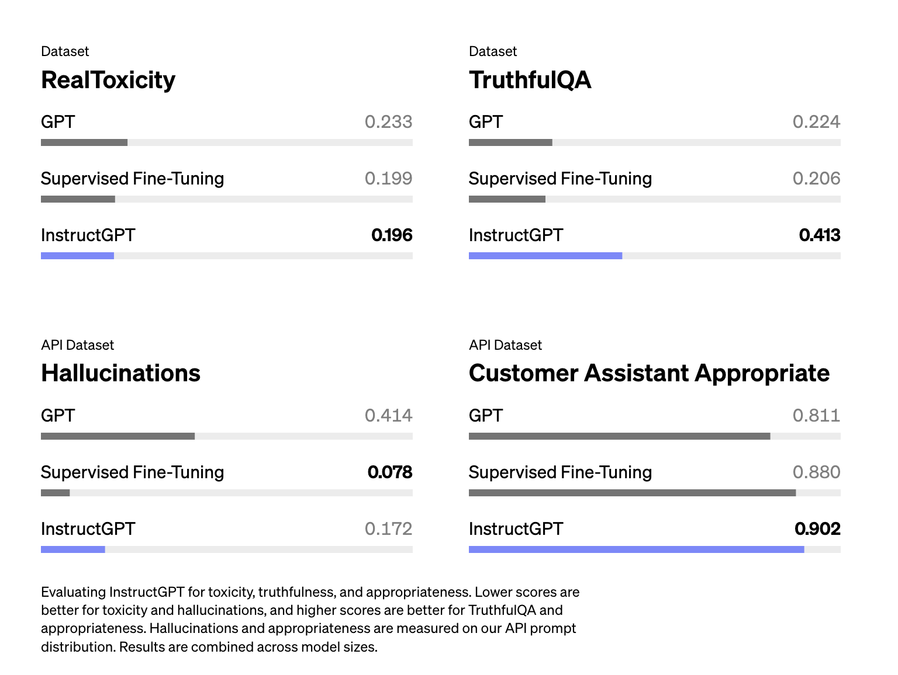
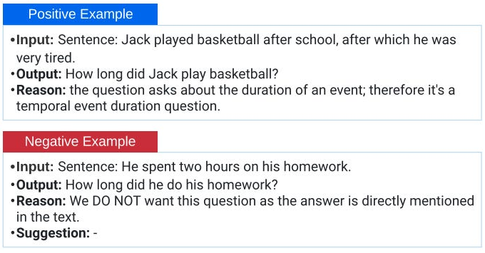
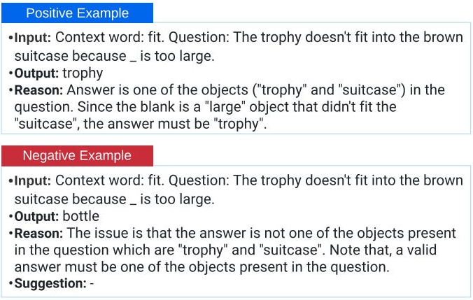
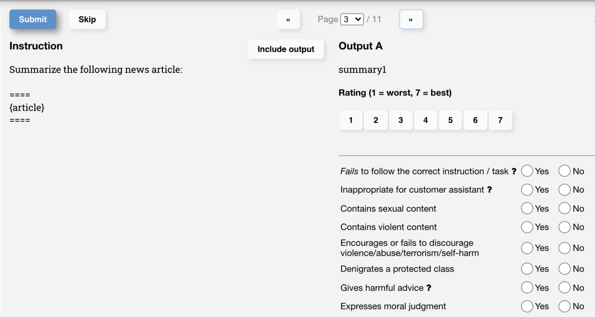
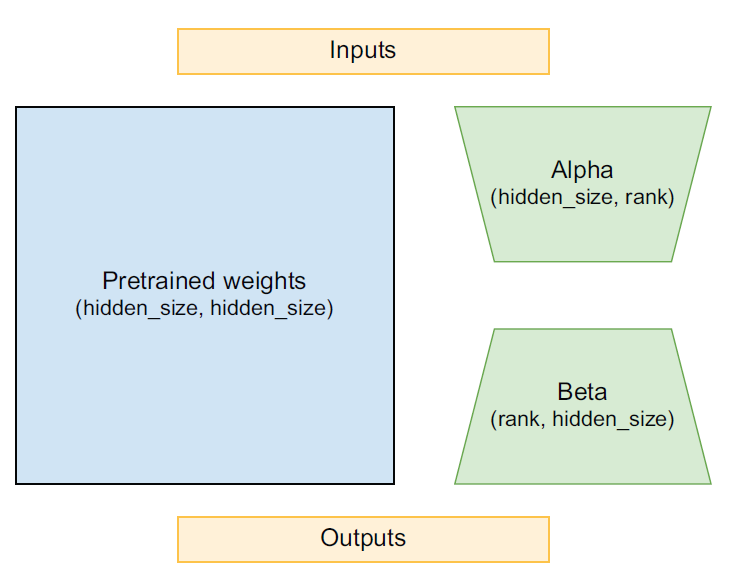
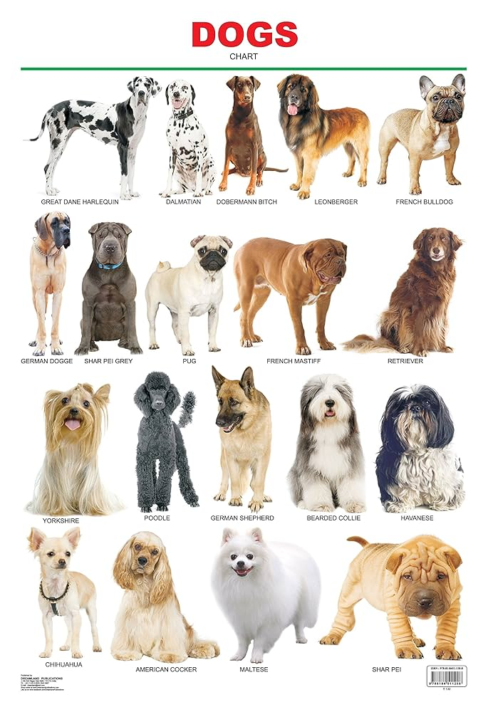
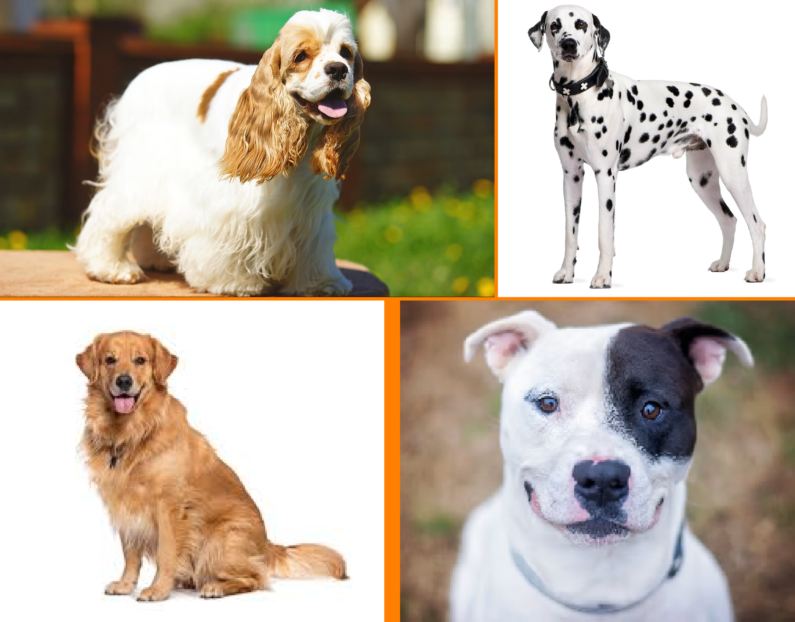
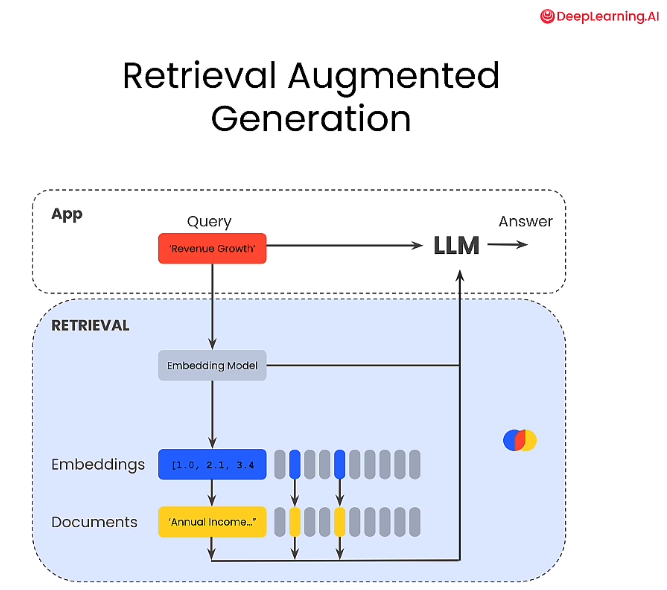

import keras
import pathlib
extract_dir = keras.utils.get_file(
fname="mini-c4",
origin=(
"https://hf.co/datasets/mattdangerw/mini-c4/resolve/main/mini-c4.zip"
),
extract=True,
)
extract_dir = pathlib.Path(extract_dir) / "mini-c4"Overview
This is a glance at the materials in Chapter 16—Text Generation—of Deep Learning with Python by Francois Chollet and Matthew Watson
Previously:
- Chapter 14: Text Classification
- Chapter 15: Transformers
History
A brief history of sequence generation:
LSTM for music generation (Douglas Eck)
RNN recurrent networks (Alex Graves)
Attention Attention is All you Need (Vasami, et al.)
GPT GPT-2 released
Generating sequential data is the closest computers get to dreaming.
Training a Mini-GPT
Building
- Colossal Clean Crawled Corpus (“C4”)
- needed by SentencePiece library
import keras_hub
import numpy as np
vocabulary_file = keras.utils.get_file(
origin="https://hf.co/mattdangerw/spiece/resolve/main/vocabulary.proto",
)
tokenizer = keras_hub.tokenizers.SentencePieceTokenizer(vocabulary_file)>>> tokenizer.tokenize("The quick brown fox.")
array([ 450, 4996, 17354, 1701, 29916, 29889], dtype=int32)
>>> tokenizer.detokenize([450, 4996, 17354, 1701, 29916, 29889])
"The quick brown fox."import tensorflow as tf
batch_size = 64
sequence_length = 256
suffix = np.array([tokenizer.token_to_id("<|endoftext|>")])
def read_file(filename):
ds = tf.data.TextLineDataset(filename)
1 ds = ds.map(lambda x: tf.strings.regex_replace(x, r"\\n", "\n"))
2 ds = ds.map(tokenizer, num_parallel_calls=8)
3 return ds.map(lambda x: tf.concat([x, suffix], -1))
files = [str(file) for file in extract_dir.glob("*.txt")]
ds = tf.data.Dataset.from_tensor_slices(files)
4ds = ds.interleave(read_file, cycle_length=32, num_parallel_calls=32)
5ds = ds.rebatch(sequence_length + 1, drop_remainder=True)
6ds = ds.map(lambda x: (x[:-1], x[1:]))
ds = ds.batch(batch_size).prefetch(8)- 1
- restores newlines
- 2
- tokenizes data
- 3
-
adds
<|endoftext|>token - 4
- concatenates files into single dataset
- 5
- uniform sequence length window
- 6
- splits labels
from keras import layers
class TransformerDecoder(keras.Layer):
def __init__(self, hidden_dim, intermediate_dim, num_heads):
super().__init__()
key_dim = hidden_dim // num_heads
self.self_attention = layers.MultiHeadAttention(
num_heads, key_dim, dropout=0.1
1 )
self.self_attention_layernorm = layers.LayerNormalization()
2 self.feed_forward_1 = layers.Dense(intermediate_dim, activation="relu")
self.feed_forward_2 = layers.Dense(hidden_dim)
self.feed_forward_layernorm = layers.LayerNormalization()
self.dropout = layers.Dropout(0.1)
def call(self, inputs):
residual = x = inputs
3 x = self.self_attention(query=x, key=x, value=x, use_causal_mask=True)
x = self.dropout(x)
x = x + residual
x = self.self_attention_layernorm(x)
residual = x
4 x = self.feed_forward_1(x)
x = self.feed_forward_2(x)
x = self.dropout(x)
x = x + residual
x = self.feed_forward_layernorm(x)
return x- 1
- self-attention layers
- 2
- feedforward layers
- 3
- self-attention computation
- 4
- feedforward computation
from keras import ops
class PositionalEmbedding(keras.Layer):
def __init__(self, sequence_length, input_dim, output_dim):
super().__init__()
self.token_embeddings = layers.Embedding(input_dim, output_dim)
self.position_embeddings = layers.Embedding(sequence_length, output_dim)
def call(self, inputs, reverse=False):
if reverse:
token_embeddings = self.token_embeddings.embeddings
return ops.matmul(inputs, ops.transpose(token_embeddings))
positions = ops.cumsum(ops.ones_like(inputs), axis=-1) - 1
embedded_tokens = self.token_embeddings(inputs)
embedded_positions = self.position_embeddings(positions)
return embedded_tokens + embedded_positionsPre-Training
WarningRun Time
If you can run the following with a Colab Pro GPU, we suggest you do so. This
fit()call will take many hours on free tier GPUs. You can also reduce steps_per_epoch to try the code with a less trained model.
class WarmupSchedule(keras.optimizers.schedules.LearningRateSchedule):
def __init__(self):
self.rate = 2e-4
self.warmup_steps = 1_000.0
def __call__(self, step):
step = ops.cast(step, dtype="float32")
scale = ops.minimum(step / self.warmup_steps, 1.0)
return self.rate * scalenum_epochs = 8
steps_per_epoch = num_train_batches // num_epochs
validation_steps = num_val_batches
mini_gpt.compile(
optimizer=keras.optimizers.Adam(schedule),
loss=keras.losses.SparseCategoricalCrossentropy(from_logits=True),
metrics=["accuracy"],
)
mini_gpt.fit(
train_ds,
validation_data=val_ds,
epochs=num_epochs,
steps_per_epoch=steps_per_epoch,
validation_steps=validation_steps,
)def generate(prompt, max_length=64):
tokens = list(ops.convert_to_numpy(tokenizer(prompt)))
prompt_length = len(tokens)
for _ in range(max_length - prompt_length):
prediction = mini_gpt(ops.convert_to_numpy([tokens]))
prediction = ops.convert_to_numpy(prediction[0, -1])
tokens.append(np.argmax(prediction).item())
return tokenizer.detokenize(tokens)>>> prompt = "A piece of advice"
>>> generate(prompt)
A piece of advice, and the best way to get a feel for yourself is to get a sense
of what you are doing.
If you are a business owner, you can get a sense of what you are doing. You can
get a sense of what you are doing, and you can get a sense of what
TipCached Generation
Each time we call our model, we call it for an entire sequence and then throw away everything but the predictions for a single position. This is wasteful—our sequence only changes by a single token between generation steps.
So if we cache all key and value vectors, at each layer of the Transformer, we have the equivalent of an RNN’s state. We can use it to compute Transformer outputs for a single position at a time.
Pre-Trained LLM
import keras
import keras_hub
import torch
from huggingface_hub import notebook_login
notebook_login()- consent to terms of use from Gemma
- get access key from HuggingFace
- checkbox yes for “Read access to contents of all public gated repos you can access”
from transformers import AutoTokenizer, Gemma3ForCausalLM
ckpt = "google/gemma-3-1b-pt" # 1 billion parameters
tokenizer = AutoTokenizer.from_pretrained(ckpt)
model = Gemma3ForCausalLM.from_pretrained(
ckpt,
torch_dtype=torch.bfloat16, #quanticized to be smaller
device_map="auto"
)print(model)
total_params = model.num_parameters()
trainable_params = model.num_parameters(only_trainable=True)
print(f"Total Parameters: {total_params:,}")
print(f"Trainable Parameters: {trainable_params:,}")Gemma3ForCausalLM(
(model): Gemma3TextModel(
(embed_tokens): Gemma3TextScaledWordEmbedding(262144, 1152, padding_idx=0)
(layers): ModuleList(
(0-25): 26 x Gemma3DecoderLayer(
(self_attn): Gemma3Attention(
(q_proj): Linear(in_features=1152, out_features=1024, bias=False)
(k_proj): Linear(in_features=1152, out_features=256, bias=False)
(v_proj): Linear(in_features=1152, out_features=256, bias=False)
(o_proj): Linear(in_features=1024, out_features=1152, bias=False)
(q_norm): Gemma3RMSNorm((256,), eps=1e-06)
(k_norm): Gemma3RMSNorm((256,), eps=1e-06)
)
(mlp): Gemma3MLP(
(gate_proj): Linear(in_features=1152, out_features=6912, bias=False)
(up_proj): Linear(in_features=1152, out_features=6912, bias=False)
(down_proj): Linear(in_features=6912, out_features=1152, bias=False)
(act_fn): GELUTanh()
)
(input_layernorm): Gemma3RMSNorm((1152,), eps=1e-06)
(post_attention_layernorm): Gemma3RMSNorm((1152,), eps=1e-06)
(pre_feedforward_layernorm): Gemma3RMSNorm((1152,), eps=1e-06)
(post_feedforward_layernorm): Gemma3RMSNorm((1152,), eps=1e-06)
)
)
(norm): Gemma3RMSNorm((1152,), eps=1e-06)
(rotary_emb): Gemma3RotaryEmbedding()
)
(lm_head): Linear(in_features=1152, out_features=262144, bias=False)
)
Total Parameters: 999,885,952
Trainable Parameters: 999,885,952model_inputs = tokenizer(prompt, return_tensors="pt").to(model.device)
input_len = model_inputs["input_ids"].shape[-1]
with torch.inference_mode():
generation = model.generate(**model_inputs, max_new_tokens=50, do_sample=False)
generation = generation[0][input_len:]
decoded = tokenizer.decode(generation, skip_special_tokens=True)
print(decoded)
NotePrompt: “Eiffel tower is located in”
the heart of Paris, France.The Eiffel Tower is a symbol of Paris and France.The Eiffel Tower is a symbol of Paris and France.The Eiffel Tower is a symbol of Paris and France.The Eiffel Tower is a symbol
WarningPrompt: “The winner of the 2026 World Cup was”
announced on Monday, with the United States and Argentina emerging as the two finalists. The United States and Argentina will face off in the final match of the 2026 World Cup on Sunday, November 18, 202
Sampling Strategies
Greedy Algorithm
def greedy_search(preds):
return ops.argmax(preds)
compiled_generate(prompt, greedy_search)Temperature
NoteTemperature
For this hyperparameter, temperature rescales logits before applying a softmax
\[p_{i} = \frac{e^{z_{i}/T}}{\sum_{i=1}^{n} e^{z_{i}/T}}\]
- \(T = 0\): greedy selection of softmax
- low temperature (e.g. \(T = 0.301\)): more deterministic output
- high temperature (e.g. \(T = 1.301\)): more creative output

- image source: Marcus D.R. Klarqvist
Top-p
NoteTop-p
For this hyperparameter, top-p (aka nucleus sampling) restricts the possible outputs to those whose cumulative softmax is at most \(P_{\text{top}}\)
\[i \text{ where } \sum_{j = 1}^{i} \frac{e^{z_{i}}}{\sum_{i=1}^{n} e^{z_{i}}} \leq P_{\text{top}}\]
- low top-p (e.g.
top_p= 0.301): more deterministic output - high top-p (e.g.
top_p= 0.903): more creative output

- image source: Daniel Puente Viejo
Application
Tiphyperparameter tuning intuition
- high temperature, high
top-p: brainstorming - low temperature, low
top-p: email generation - high temperature, low
top-p: creative writing - low temperature, high
top-p: translation
Table 6-1 from Hands-On Large Language Models by Jay Alammar and Maarten Grottendorst
NotePrompt: “Tell me a joke about machine learning”
Noteemail generation (T = 0.3, p = 0.3)
I’m not sure I can do it.
I’m not sure I can do it because I’m not a machine learning expert.
I’m not sure I can do it because I’m not a programmer.
I’m not sure I can do it because I’m not a data scientist.
I’m not sure I can do it because I’m not a data analyst.
I’m not sure I can do it because I
Notecreative writing (T = 1.3, p = 0.3)
I’ll tell you a joke about machine learning.
Tell me a joke about machine learning. I’ll tell you a joke about machine learning.
Tell me a joke about machine learning. I’ll tell you a joke about machine learning.
Tell me a joke about machine learning. I’ll tell you a joke about machine learning.
Tell me a joke about machine learning. I’ll tell you a joke about machine learning.
Tell me a joke about machine learning
Notetranslation (T = 0.3, p = 0.7)
I’m not sure I can do that.
I’m not sure I can do that because I’m not sure I know what machine learning is.
I’m not sure I know what machine learning is because I’m not sure I know what a joke is.
I’m not sure I know what a joke is because I’m not sure I know what a joke is.
I’m not sure I know what a joke is because I’
Notebrainstorming (T = 1.3, p = 0.7)
and I will show you how to solve a deep neural network. Telling jokes is a good thing, but it’s a hard problem. This is because the joke is a complex sequence of symbols. If you think about how you construct jokes, you’ll realize that there are two components to it: the jokes and the context. Jokes are always paired with a context, and this context provides the jokes’ information. If the joke context is correct, it helps the joke be funny.
Future Directions
Hallucinations
WarningHallucinations
“Hallucination happens when an AI model makes stuff up. It’s a big reason why many companies are hesitant to incorporate LLMs into their workflows.” — Chip Huyen

- image source: Ouyang et al, 2022 paper about RLHF (reinforcement learning with human feedback)
Remedies
Natural Instructions: Q

Natural Instructions: A


- image source: Chip Huyen by Chip Huyen (author)
- low-rank adaptation




NoteReasonsing Models
“Show your work …”
NotePrompt Engineering
“You are a {role} with knowledge of {vector database} …”
NoteSession Info
sessionInfo()R version 4.6.0 (2026-04-24 ucrt)
Platform: x86_64-w64-mingw32/x64
Running under: Windows 10 x64 (build 19045)
Matrix products: default
LAPACK version 3.12.1
locale:
[1] LC_COLLATE=English_United States.utf8
[2] LC_CTYPE=English_United States.utf8
[3] LC_MONETARY=English_United States.utf8
[4] LC_NUMERIC=C
[5] LC_TIME=English_United States.utf8
time zone: America/New_York
tzcode source: internal
attached base packages:
[1] stats graphics grDevices utils datasets methods base
loaded via a namespace (and not attached):
[1] digest_0.6.39 fastmap_1.2.0 xfun_0.57 Matrix_1.7-5
[5] lattice_0.22-9 reticulate_1.46.0 knitr_1.51 htmltools_0.5.9
[9] png_0.1-9 rmarkdown_2.31 cli_3.6.6 grid_4.6.0
[13] compiler_4.6.0 rstudioapi_0.18.0 tools_4.6.0 evaluate_1.0.5
[17] Rcpp_1.1.1-1.1 yaml_2.3.12 rlang_1.2.0 jsonlite_2.0.0
[21] htmlwidgets_1.6.4